Operator Deployment LAB
We will be using Product Enablement AAP Operator Deployment lab LAB for this deployment. Please be aware that setting up a Operator Lab will take about fifty minutes. Following that, you can proceed with the installation procedures:
-
Log in to the Red Hat OpenShift Container Platform using your credentials form the RHDP login page.
-
Navigate to Ecosystem Software Catalog and search for Ansible Automation Platform.
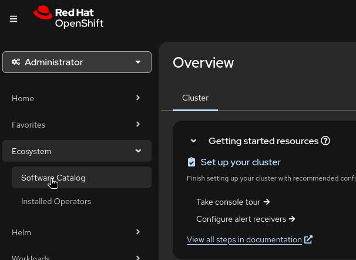
-
Search for Ansible Automation Platform and click Install.
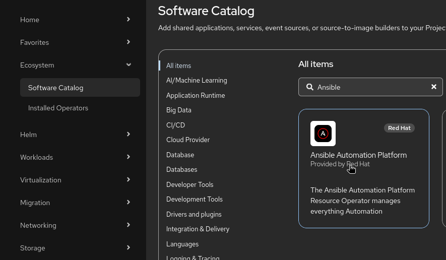
-
Select a stable-2.7.
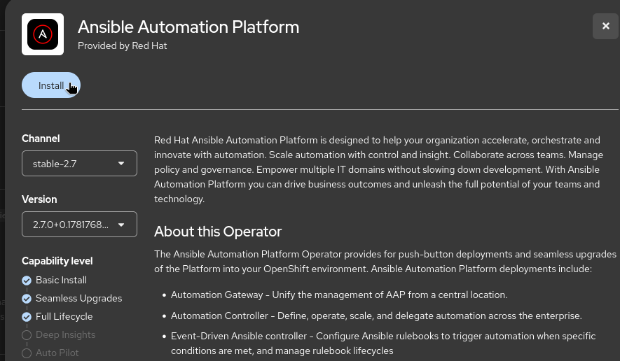
-
Select namespace as default which will be aap.
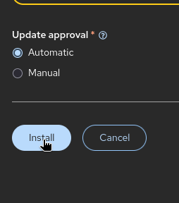
-
Click Install.
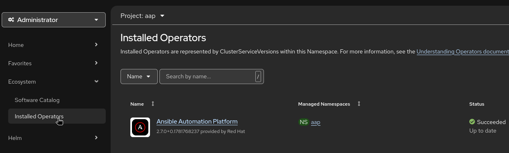
-
Go to Installed Operators and there you will see Ansible Automation Platform operator installed click on it.
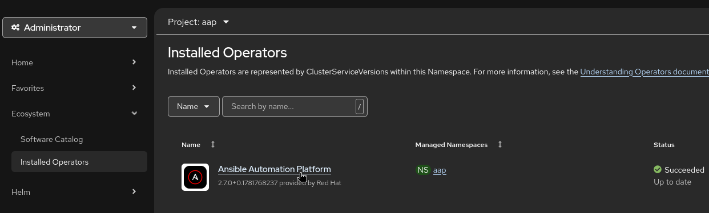
-
Select project as aap if it’s not aap.
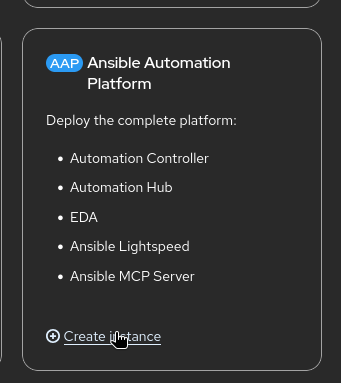
-
There scroll to the option Ansible Automation Platform and click on Create instance which will deploy all the components of AAP.
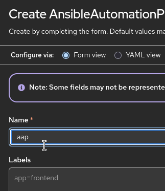
-
Provide the Name on which will be used to create the resources for that AAP like network routes,secrets.
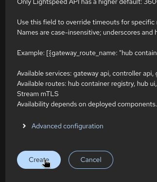
Note: There are many other options that we can customize according to the requirement but in this we will be taking care of very basic deployment.
-
Click on Create it will deploy the resources which will take around 20 minutes.
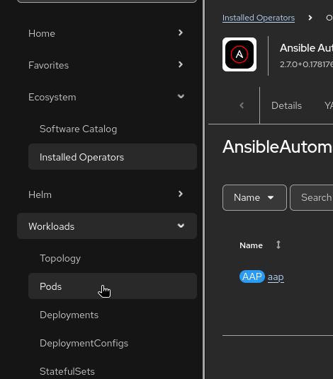
-
On openshift dashboard Click on Networking and then routes and click on the ansible route or the Name given in Step 11 above.
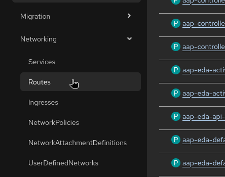
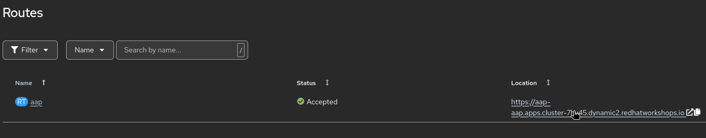
-
On openshift dashboard go to Workloads and then Secrets and search for admin . click on it and copy the password.
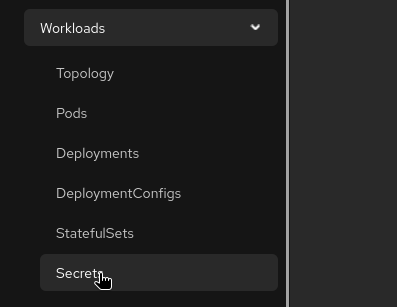
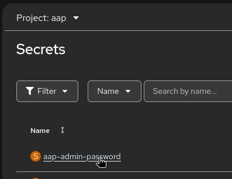
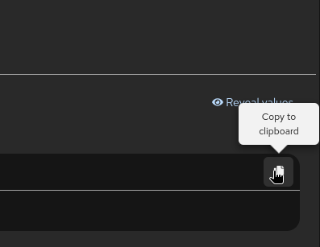
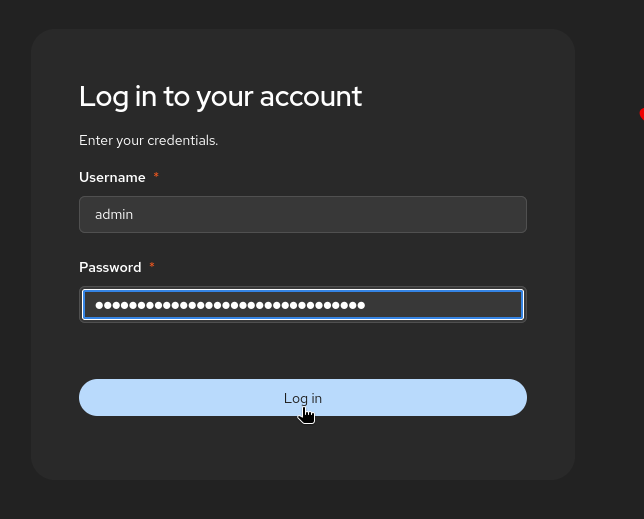
-
Provide the Red Hat login ID to get the subscription for attaching it to the AAP and 60-day subscription to Red Hat Ansible® Automation Platform or Red Hat Developer Subscription for Individuals subscription can be used for this lab.
-
Submit it and run the Project sync of the Demo project to confirm the job is getting executed.